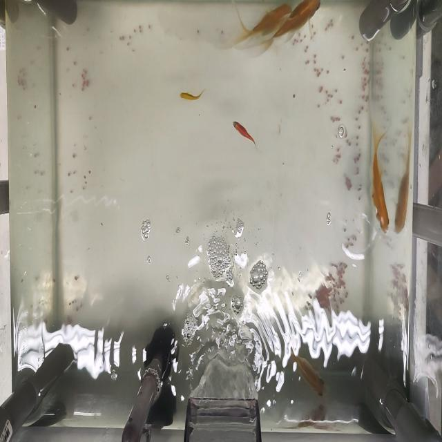

SalmoSonar Visión
datasets · videos · predicciones · atención
Datasets / bait (Roboflow, 5.000 imágenes) /
train/images/VID_20241125_171700_HDR10PLUS-mp4_20241127_155122-027_jpg.rf.76c3eef537939e4e0105f08409e91ada.jpg
← anterior
siguiente →

etiqueta del dataset
predicción del modelo
etiqueta a revisar
Predicción en vivo
Envía la imagen al servicio de visión (http://127.0.0.1:8601) y dibuja cajas y probabilidades en el visor.
Aciertos1IoU ≥ 0.5
Falsos positivos29predicciones sin etiqueta
No detectados11etiquetas sin predicción
Atención en cajas–84.3 ms por imagen
Etiquetas (12)
| # | Clase | Caja px | Largo px | Alto px | Revisión | IoU |
|---|---|---|---|---|---|---|
| #1 | pellet | 68×86 | 86 | – | ok | no detectado |
| #2 | pellet | 28×46 | 46 | – | ok | no detectado |
| #3 | pellet | 44×88 | 88 | – | ok | no detectado |
| #4 | pellet | 30×156 | 156 | – | ok | no detectado |
| #5 | pellet | 35×57 | 57 | – | ok | no detectado |
| #6 | pellet | 41×46 | 46 | – | ok | no detectado |
| #7 | pellet | 16×26 | 26 | – | ok | 0,73 |
| #8 | pellet | 21×22 | 22 | – | ok | no detectado |
| #9 | pellet | 34×22 | 34 | – | ok | no detectado |
| #10 | pellet | 15×37 | 37 | – | ok | no detectado |
| #11 | pellet | 40×59 | 59 | – | ok | no detectado |
| #12 | pellet | 32×76 | 76 | – | ok | no detectado |
Largo según el esquema caja. Con la calibración estéreo se convierte a centímetros (ml/salmosonar_cv/measure/stereo.py).
Embebible en la interfaz 3D: http://127.0.0.1:3800/vision/embed/datasets/bait_5000/images/2